AMT
Performance and optimization
Bertil Chapuis, Dorian Gambin
## <i class="fas fa-tasks"></i> Overview of Today's Class - Fundamentals - Concepts and culture - Instrumentation - Observability - Methodologies - Guided exercise on the optimization of a web application
Fundamentals
## <i class="fa-solid fa-book"></i> Terminology **Performance** refers to the effectiveness of a system in completing tasks, often measured by speed, responsiveness, and quality. **Efficiency** measures how well resources are used to achieve a given level of performance. **Optimization** is the process of making a system or process as effective, efficient, or functional as possible. **Latency** is the time delay between an action and its response. **Throughput** is the amount of work or data processed by a system in a given time period. **Overhead** refers to the additional resources (such as time, memory, or computational power) required to perform a task beyond the actual work itself. A **bottleneck** is a point of congestion in a system that limits overall performance.
## <i class="fa-solid fa-book"></i> Utilization Utilization is a frequent measurement in operating system, it can be either time-based or capacity-based. ### Time-based utilization `U = B/T`, where U = utilization, B = total time the system was busy during T, the observation period. The percentage of time during which a resource is actively used over a specific period, sometimes simply called the "percent busy". Examples: CPU utilization 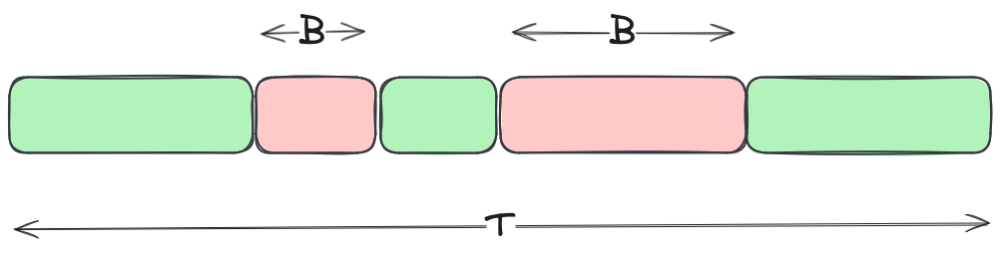 ### Capacity-based utilization `U = O/C`, where U = utilization, O = the occupied capacity, C = the total capacity A system or component (such as a disk drive) is able to deliver a certain capability with an upper limit, named a capacity. At any level of performance, the system or component is working at some proportion of this capacity. Examples: Memory utilization, disk throughput utilization, disk volume utilization 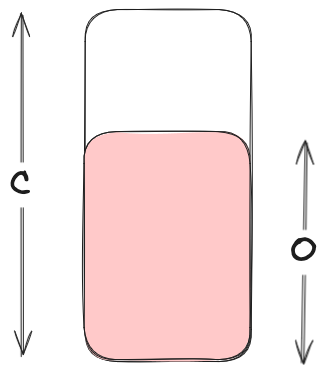 <div style="font-size: 12px;"> Based on: [Systems Performance: Enterprise and the Cloud, Brendan Gregg, 2013](https://learning.oreilly.com/library/view/systems-performance-enterprise/9780133390124/) </div>
## <i class="fa-solid fa-book"></i> Statistical tools The **standard deviation** is a measure of variance, with larger values indicating greater variance from the average (mean). Standard deviation is an useful aggregate to determine the *spread* of data. The **percentiles** are values below which a given percentage of data points in a dataset fall. Percentiles are useful to express an aggregate value while ignoring outliers observations that might due to edge cases. **An outlier** is a data point that significantly deviates from the other observations in a dataset. The 50<sup>th</sup> percentile is equal to the median. <img src="./images/stdev-stats.png" alt="Stdev, mean, percentile" style="width: 65%;"> <div style="text-align: center;font-size: 12px;"> Source: [Systems Performance: Enterprise and the Cloud, Brendan Gregg, 2013](https://learning.oreilly.com/library/view/systems-performance-enterprise/9780133390124/) </div> Be aware that those tools are well suited for uni-modal distributions as in the above example, but have some limitation for bimodal distributions, such as when caching is employed (for in-depth explanation see reference in notes). Notes: See 2.8.5 Multimodal Distributions, Systems Performance, 2nd Edition, Brendan Gregg, 2020 https://learning.oreilly.com/library/view/systems-performance-2nd/9780136821694/
## <i class="fa-solid fa-book"></i> Sampling Sampling is the process of converting a continuous signal into a discrete one. The output signal is a statistical approximation of the original signal. <img src="./images/sampling.png" style="width: 30%;"> <div style="text-align:center; font-size: 12px;"> Source: By Д.Ильин: vectorization, CC0, https://commons.wikimedia.org/w/index.php?curid=98587159 </div> * *S(t)*, is the continuous signal * *T*, is the sampling interval * *S<sub>i</sub>*, are the samples <div style="font-size: 12px;"> Sampling is used when collecting the exact signal is not technically possible or induce an important overhead, and the statistical approximation is sufficient to represent the underlying continuous signal. Sampling techniques are ubiquitous in observability and instrumentation technologies. In some circumstances several layers of sampling happens between continuous events, their collection and querying; their presence must be known in order to correctly interpret the resulting data. <div style="font-size: 12px;"> Source: https://en.wikipedia.org/wiki/Sampling_(signal_processing) </div>
## <i class="fa-solid fa-book"></i> Fundamental metrics and their types Metrics are quantifiable measures used to represent the performance, quality, or status of a system. A metric is generally collected and stored as tuples of: * metric name * value * timestamp <table border="0"> <tr> <td>Counter is a metric value that can only increase. </br>Examples: number of requests, number of packets, counting errors</td> <td>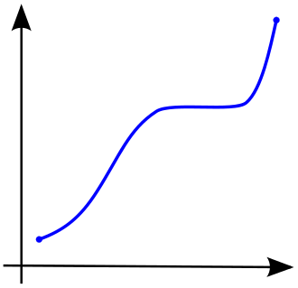</td> </tr> <tr> <td>A gauge is a metric that represents a single numerical value that can arbitrarily go up and down. </br>Examples: temperature, cpu utilization, healthchecks </td> <td>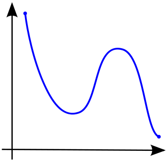</td> </tr> <tr> <td> Histogram records the distribution of values over a set of configurable buckets (also called bins). </br>Examples: latency of requests</td> <td><img src="./images/histogram2.png" style="width: 40%;"></td> </tr> </table> <span style="font-size: 0.5em;"> Source of illustrations: By Oleg Alexandrov, Public Domain, https://commons.wikimedia.org/w/index.php?curid=2267780, By Oleg Alexandrov, Public Domain, https://commons.wikimedia.org/w/index.php?curid=3627244 </span>
## <i class="fa-solid fa-clipboard-question"></i> Gauges and counters If the difference with histograms is clear, why make a distinction between a gauge and a counter when both are functions of *f(x)=y*? --- ## <i class="fa-solid fa-book"></i> Gauge and counter ### Interpretation and analysis Different mathematical operations and analyses can be performed on gauges and counters. Some mathematical functions are suitable for counters but wouldn't make sense for gauges, and vice versa. Counters can tolerate a reset to zero (e.g. application restart which resets counters) that will be interpreted correctly by the system consuming the data and adapt accordingly. Counters are used to compute rates, such as the requests/s over a counter of number of requests. A gauge can be used with functions such as computing that maximum over time or [regression analysis](https://en.wikipedia.org/wiki/Regression_analysis) (i.e. prediction of metric evolution). ### Data collection and storage Counters and gauge have different characteristic when their are sampled. ### Alerting Gauges are will suited for setting threshold-based alerts (e.g., alert if memory usage exceeds 80%), while it is often less useful to create alerts over counters. ### Relationship Counters are used to compute gauges that are then used draw visualization or alerts. For example the CPU utilization is compute from counters. Example in Prometheus with node-exporter: ``` 1 - rate(node_cpu_seconds_total{mode="idle"}[1m] ```
## <i class="fa-solid fa-book"></i> Sampling a Counter When sampling a counter and the interval is greater than an event, **the sampled signal retain some information about the event**. The increase rate is averaged over the sampling interval, but since the event is represented, some analysis can still be performed. <table> <tr> <td>Sampling</td> <td>Sampled</td> </tr> <tr> <td><img src="./images/sampling-acounter.png" style="width: 100%;"></td> <td>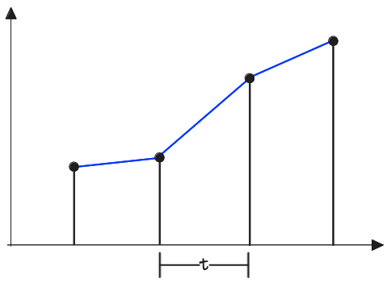</td> </tr> </table>
## <i class="fa-solid fa-book"></i> Sampling a Gauge When sampling a gauge and the interval is greater than an event, the sampled signal has zero knowledge of the event. No trace remain in the output signal. Some actions can be taken to mitigates this: * Collect counters and create gauges afterwards. For example collect CPU time counters instead of CPU utilization. * Increase the sampling interval. * Refactor to use another metrics that is not a gauge. For example a temperature gauge could be complemented with a thermal throttling time counter if available for a system In some cases, it is acceptable to overlook such events, assuming that if they occur within the sampling interval, they do not significantly affect overall performance or system health. **Whenever possible counters are collected with sampling and gauges created from those counters at querying time.** <table> <tr> <td>Sampling</td> <td>Sampled</td> </tr> <tr> <td>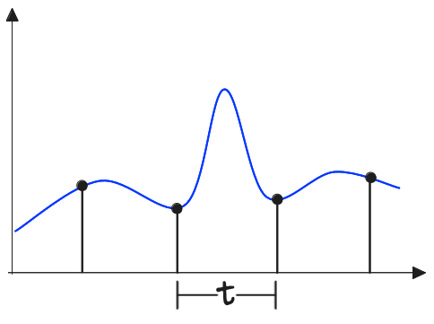</td> <td>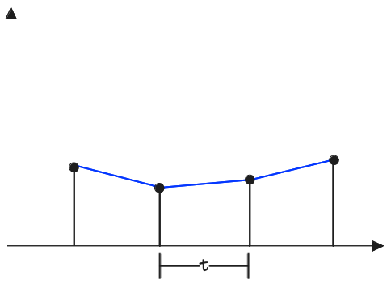</td> </tr> </table>
## <i class="fa-solid fa-book"></i> From counters to gauges, CPU utilization `U = B/T`, where U = utilization, B = total time the system was busy during T, the observation period. Collect counter: * cpu_busy_seconds_total (including values and timestamp of samples) Create the gauge by computing at query time: * cpu_utilization = Δb / Δt <table> <tr> <td>Counter and computation</td> <td>CPU Utilization</td> </tr> <tr> <td>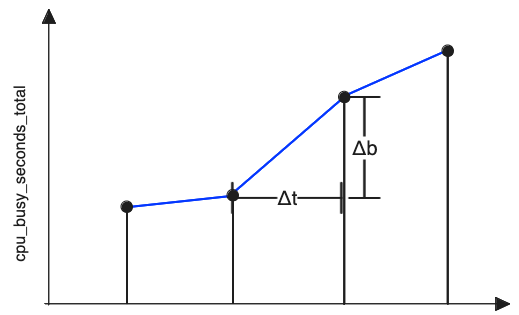</td> <td> <img src="./images/cpu_utilization.png" style="width: 100%;"></td> </tr> </table>
## <i class="fa-solid fa-book"></i> CPU utilization is always an average over a time window CPU utilization is a good general indicator of resource usage, but it has some limitations. A key limitation is that it represents an average over a specific time window, which smooths out fluctuations in usage. As a result, a brief burst of high CPU usage can appear the same as constant usage over that period. For example, two scenarios—one with a burst of CPU activity and one with steady usage—can show the same average CPU utilization over the same time window. While CPU utilization is valuable, it should be complemented with other metrics, such as instructions per cycle, to get a more accurate picture of system performance. See [CPU Utilization is Wrong](https://www.brendangregg.com/blog/2017-05-09/cpu-utilization-is-wrong.html). <table style="border: 1px solid black"> <tr> <td>Type of usage</td> <td>Real CPU usage</td> <td>Counter and time window</td> <td>Computed CPU usage</td> </tr> <tr> <td>Constant</td> <td>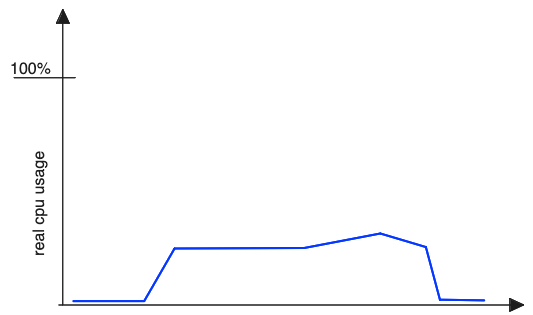</td> <td><img src="./images/cpu_real_counter_flat.png" style="margin: unset; width: 50%;"></td> <td>U = ΔB/ΔT = <b>25%</b></td> </tr> <tr> <td>Burst</td> <td><img src="./images/cpu_real_usage_burst.png" style="margin: unset; width: 50%;"></td> <td> <img src="./images/cpu_real_counter_burst.png" style="margin: unset; width: 50%;"></td> <td>U = ΔB/ΔT = <b>25%</b></td> </tr> </table>
Concepts and culture
## <i class="fa-solid fa-landmark"></i> Premature optimization Premature optimization is the practice of attempting to optimize the performance of a program or system before it is necessary or before the overall design and functionality are fully understood. Negative impacts: * Implementation time required for optimization * Code readability and maintenance * Invest in non-critical optimizations, meaning with negligible or low impact Most cited quote: <i class="fa-solid fa-quote-left"></i>We should forget about small efficiencies, say about 97% of the time: premature optimization is the root of all evil. Yet we should not pass up our opportunities in that critical 3% <i class="fa-solid fa-quote-right"></i> More context surrounding the quote: <i class="fa-solid fa-quote-left"></i> There is no doubt that the grail of efficiency leads to abuse. Programmers waste enormous amounts of time thinking about, or worrying about, the speed of noncritical parts of their programs, and these attempts at efficiency actually have a strong negative impact when debugging and maintenance are considered. [...] A good programmer will not be lulled into complacency by such reasoning, he will be wise to look carefully at the critical code; but only after that code has been identified. It is often a mistake to make a priori judgments about what parts of a program are really critical, since the universal experience of programmers who have been using measurement tools has been that their intuitive guesses fail. <i class="fa-solid fa-quote-right"></i> [Donald Knuth, Structured Programming with go to Statements, 1974](https://dl.acm.org/doi/10.1145/356635.356640)
## <i class="fa-solid fa-landmark"></i> Priorities: work, right, fast <i class="fa-solid fa-quote-left"></i> Many studies have shown that most programs spend 50 percent or more of their time in a very small portion (5 percent or so) of their code. This suggests that the 95 percent of the program that is noncritical should be as clear and easy to understand and change as possible. When it comes to the critical 5 percent, C lets the user get very close to the target machine in order to improve efficiency. Furthermore, many C environments contain measurement tools that enable the programmer to identify these critical sections easily. **But the strategy is definitely: first make it work, then make it right, and, finally, make it fast** <i class="fa-solid fa-quote-right"></i> Often attributed to [Kent Beck](https://en.wikipedia.org/wiki/Kent_Beck) Source: [Byte Magazine Volume 08 Number 08 - The C Language, 1983](https://archive.org/details/byte-magazine-1983-08/page/n245/mode/2up)
## <i class="fa-solid fa-landmark"></i> Amdahl's law <i class="fa-solid fa-quote-left"></i> This states that the overall performance improvement gained by optimizing a single part of a system is limited by the fraction of time that the improved part is actually used. You may increase the performance of one part of your API by a factor of 10, but if a client's program only spends 1% of its time in that code, then the overall improvement is reduced to only a factor of 0.1 (10 * 0.01). <i class="fa-solid fa-quote-right"></i> Source: [API Design for C++, Martin Reddy, 2011](https://learning.oreilly.com/library/view/api-design-for/9780123850034/xhtml/chp007.xhtml#st0010) Derived from [Gene M. Amdahl, Validity of the single processor approach to achieving large scale computing capabilities, 1967](https://dl.acm.org/doi/10.1145/1465482.1465560)
## <i class="fa-solid fa-landmark"></i> The critical 3%, a memory usage example Identify the critical line that is causing high memory usage that could lead to `OutOfMemory` errors: ```java [|7] public Base64File getFileBase64(Long id) throws IOException { File file = fileRepository.findById(id).orElseThrow(() -> new EntityNotFoundException(id, File.class)); try (S3Object s3Object = s3Service.download(file.getFilename())) { S3ObjectInputStream objectInputStream = s3Object.getObjectContent(); byte[] data = Base64Utils.encode(IOUtils.toByteArray(objectInputStream)); return new Base64File(file.getFilename(), data); } } ``` <div style="font-size: 12px;"> Source: Java project at HEIG-VD/IICT </div>
## <i class="fa-solid fa-landmark"></i> The critical 3%, a memory usage example The whole file content is loaded in memory, this method was called per user request, such as several users requesting large files were saturating the memory (i.e jvm heap). This case could be argued to be a programming error instead of a performance issue. From the side of performance the high memory usage is relevant. A better solution would be to refactor the code to use buffering and `InputStream/OutputStream` implementation. See: https://github.com/apache/commons-codec/blob/rel/commons-codec-1.17.1/src/main/java/org/apache/commons/codec/binary/Base64OutputStream.java
## <i class="fa-solid fa-gauge"></i> Stackoverflow Infrastructure Stackoverflow is a monolith application deployed on: - 9 web servers - 4 SQL servers - 2 Redis servers - 3 ElasticSearch servers - 2 HAProxy servers https://stackexchange.com/performance https://nickcraver.com/blog/2016/02/17/stack-overflow-the-architecture-2016-edition/
Observability
## <i class="fa-solid fa-gauge"></i> Definition Observability in software engineering refers to the ability to understand the internal state of a system by analyzing the outputs it produces, such as **metrics**, **logs** and **traces**. It enables developers and operators to diagnose issues, monitor performance, and predict potential problems without direct access to the system's internal workings. * **Metrics** are numerical measurements that indicate a system's performance or health. * **Logs** are timestamped textual records of events or messages. They can be structured or unstructured. * **Traces** are detailed records of the execution path or flow of a request as it moves through different components
## <i class="fa-solid fa-chart-line"></i> Metrics Metrics are typically used to create visualizations that provide insights into the system's performance and behavior. Additionally, alerts can be configured based on metrics to notify users when specific conditions or thresholds are met. 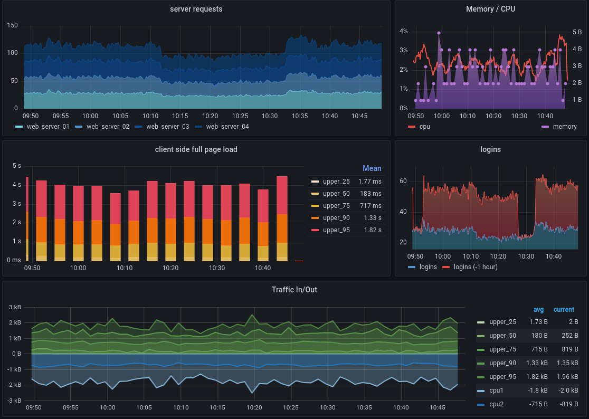 <div style="text-align: center; font-size: 12px;"> Source: https://grafana.com/docs/grafana-cloud/introduction/metrics-and-visualizations/ </div>
## <i class="fa-solid fa-list"></i> Logs **Logs** are timestamped, records of discrete events that occur in a system. They provide detailed information about specific points in time, often including contextual data such as error messages, user actions, or system events. A **log level** (e.g, WARN, INFO, FATAL) is a classification that indicates the severity or importance of a log message. It helps prioritize and filter logs based on their significance. **Structured logging** is a logging practice where log messages are recorded in a structured and machine-readable format, typically as key-value pairs or JSON objects. Mapped Diagnostic Context (MDC), is a feature provided by logging frameworks (such as SLF4J) that allows developers to include contextual information in their log messages. When structured logging is combined with MDC, logs become more detailed and contextual, making them easier to query and analyze. 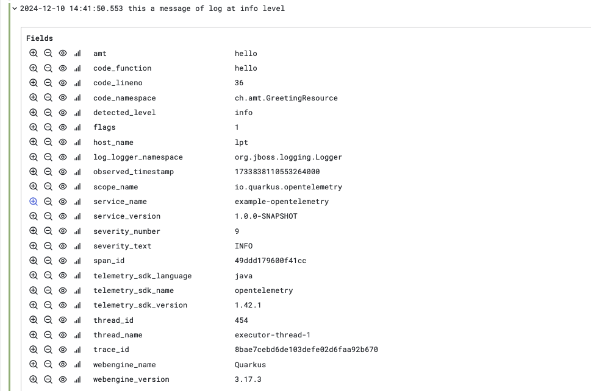
## <i class="fa-solid fa-share-nodes"></i> Traces Traces are a "path" representation of a single request as it propagates through a system. A trace is composed of a tree-like structure of spans, which are the building blocks of the trace. Spans are timed event or work unit within the path of the request. 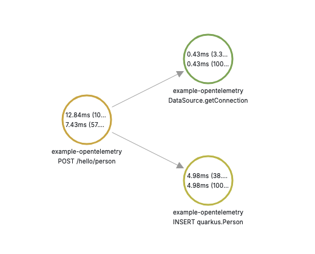
## <i class="fa-solid fa-share-nodes"></i> Traces Textual representation of a trace's spans. Note the hierarchy definition through `spanId` and `parentSpanId`, the start and end timestamps. ``` { ... "spans": [ { "traceId": "9a5efb254b63a57aa9992fc9455acc22", "spanId": "9b8459fb74c5a633", "parentSpanId": "caf1835eda3fafcf", "name": "INSERT quarkus.Person", "kind": "SPAN_KIND_CLIENT", "startTimeUnixNano": 1733832773655515100, "endTimeUnixNano": 1733832773660500000, "attributes": [ { "key": "db.system", "value": { "stringValue": "postgresql" } }, { "key": "db.statement", "value": { "stringValue": "insert into Person (firstName,lastName) values (?,?)" } } ... ], "droppedAttributesCount": 0, "droppedEventsCount": 0, "droppedLinksCount": 0, "status": { "code": 0, "message": "" } }, { "traceId": "9a5efb254b63a57aa9992fc9455acc22", "spanId": "caf1835eda3fafcf", "parentSpanId": "0000000000000000", "name": "POST /hello/person", "kind": "SPAN_KIND_SERVER", "startTimeUnixNano": 1733832773651633000, "endTimeUnixNano": 1733832773664476700, "attributes": [ { "key": "http.route", "value": { "stringValue": "/hello/person" } }, { "key": "http.request.method", "value": { "stringValue": "POST" } }, ... ], "droppedAttributesCount": 0, "droppedEventsCount": 0, "droppedLinksCount": 0, "status": { "code": 0, "message": "" } } ] } ```
## <i class="fa-solid fa-gauge"></i> OpenTelemetry <i class="fa-solid fa-quote-left"></i> OpenTelemetry, also known as OTel, is a vendor-neutral open source Observability framework for instrumenting, generating, collecting, and exporting telemetry data. <i class="fa-solid fa-quote-right"></i> [Documentation | OpenTelemetry](https://opentelemetry.io/docs/) OpenTelemetry aims to provide a stable standard and protocol so that different implementations work together seamlessly, preventing vendor lock-in. A collection of libraries, SDKs and tools are as well provided. The project is part of Cloud Native Computing Foundation ([CNCF](https://www.cncf.io/)).
## <i class="fa-solid fa-gauge"></i> OpenTelemetry 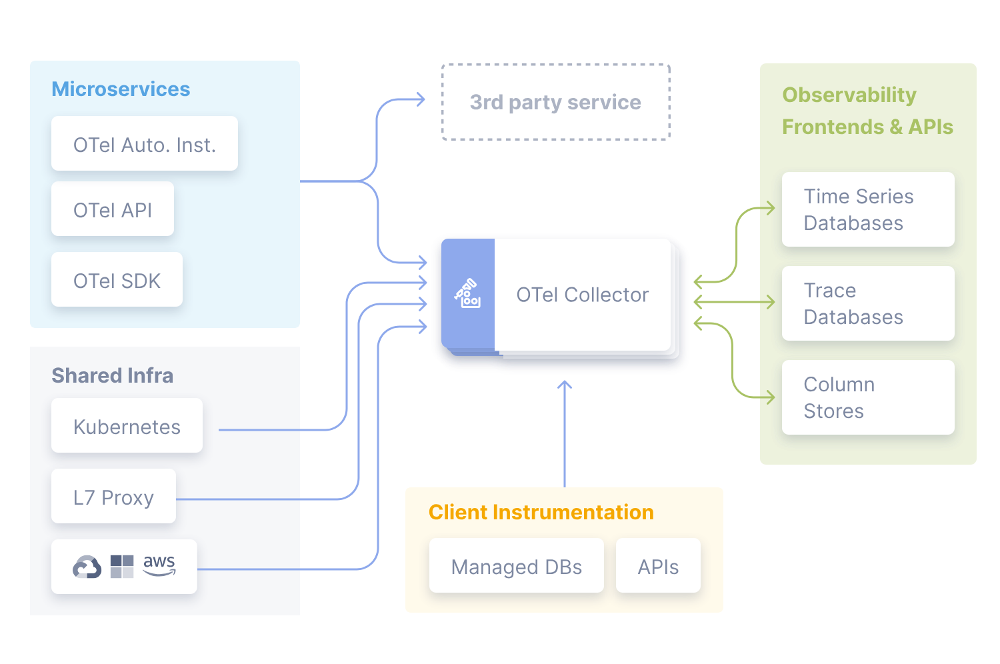 <div align="center" style="font-size: 12px;"> Source: https://opentelemetry.io/docs/ </div>
Hands-on
## <i class="fa-solid fa-hand-paper"></i> Hands-on! Checkout the following repository on GitHub and optimize the application: https://github.com/amt-classroom/example-performance The following references might be useful: - https://quarkus.io/guides/hibernate-orm#quarkus-hibernate-orm_quarkus.hibernate-orm.log.queries-slower-than-ms - https://quarkus.io/guides/cache - https://quarkus.io/guides/cache-redis-reference - https://quarkus.io/guides/redis-dev-services
## <i class="fa-solid fa-hand-paper"></i> Hands-on! Checkout the following repository on GitHub and follow the instructions in `README`: https://github.com/amt-classroom/example-opentelemetry
Questions?